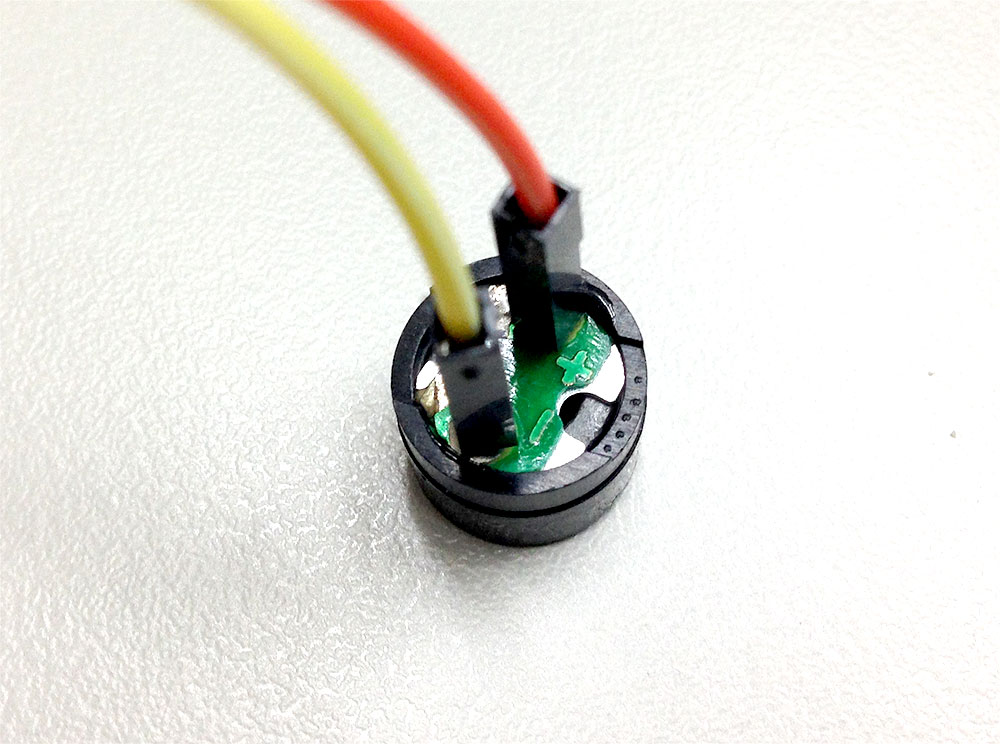

範例教學 13：蜂鳴器播放自製音樂
蜂鳴器是一個可以產生聲音信號的裝置，使用直流電供電，接通訊號源之後，音訊信號電流通過電磁線圈，使電磁線圈產生磁場，造成 振動膜片週期性地振動發聲，而 Webduino 更可以藉由 HTML5 Attribute 來填入音符代碼，每個代碼都會對應到一個數值，這個數值相對應蜂鳴器聲音的頻率，因此藉由純粹的 HTML5 或 javascript 就可以編輯音樂，透過蜂鳴器發聲。
( 蜂鳴器並不適合「基礎教育版的開發板」，必須使用「馬克一號開發板 」進行實作 )
範例影片展示 ( 請開聲音 )
接線與實作
1. 接上蜂鳴器
蜂鳴器在電路板的附近，有標示「+」和「-」的符號，「-」接在開發板的 GND，「+」接在 11 的腳位。

2. 完成後的實際長相


範例解析 (快速體驗、jsbin 範例、檢查連線狀態)
在 head 的地方引入相關的 WebComponents，主要是要引入蜂鳴器的 WebComponent：wa-buzzer.html。
<script src="http://webduino.io/components/webcomponentsjs/webcomponents.js"></script>
<link rel='import' href='http://webduino.io/components/webduino/web-arduino.html'></link>
<link rel='import' href='http://webduino.io/components/webduino/wa-buzzer.html'></link>
蜂鳴器的重點在 HTML 的部分，在 body 部分先放入蜂鳴器，接著就是要撰寫相關的 HTML5 Attribute，這裏最重要的屬性有兩個：notes 和 tempos，notes 是要填入對應的音符陣列 ( 可參考這篇介紹文章 )，而 tempos 是填入每個音符的時間數值陣列，如果填寫 1 則是 1/1 秒，填入 10 則是 1/10 秒，如果都不填寫的話則會預設 1/10 秒。此外，也可以填入 autoplay 的屬性，只要頁面載入之後就會自動播放。
<web-arduino id='board' device='你的 device 名稱'>
<wa-buzzer id='buzzer' pin='11' notes='E7,E7,0,E7,0,C7,E7,0,G7,0,0,0,G6,0,0,0,C7,0,0,G6,0,0,E6,0,0,A6,0,B6,0,AS6,A6,0,G6,E7,0,G7,A7,0,F7,G7,0,E7,0,C7,D7,B6,0,0,C7,0,0,G6,0,0,E6,0,0,A6,0,B6,0,AS6,A6,0,G6,E7,0,G7,A7,0,F7,G7,0,E7,0,C7,D7,B6,0,0' tempos='' ></wa-buzzer>
</web-arduino>
<button id="play">play</button>
上面的 HTML 是只填寫 notes 而已，下面的範例是有填寫 tempos，基本上 notes 長度多少 tempos 長度也要設為多少，下面的 HTML 可以展示不同聲音長度的效果。( jsbin 範例 )
<web-arduino id='board' device='你的 device 名稱'>
<wa-buzzer id='buzzer' pin='11' notes='c4,d4,e4,f4,g4,a4,b4,c5' tempos='1,2,3,4,5,6,7,8' ></wa-buzzer>
</web-arduino>
<button id="play">play</button>
了解 HTML 之後，javascript 就簡單多了，因為是 HTML5 Attribute，所以我們可以用 javascript 的 setAttribute 來設定屬性，或是使用 buzzer 的 API play() 來進行播放。
window.addEventListener('WebComponentsReady', function () {
var board = document.getElementById('board');
board.on('ready',function ready() {
var buzzer = document.getElementById('buzzer');
play.addEventListener('click', function(){
buzzer.play();
});
});
}, false);
如果還有不清楚的，不妨利用這個 快速體驗，輸入 device 號碼，點選 play 就會開始播放馬力歐的音樂囉。